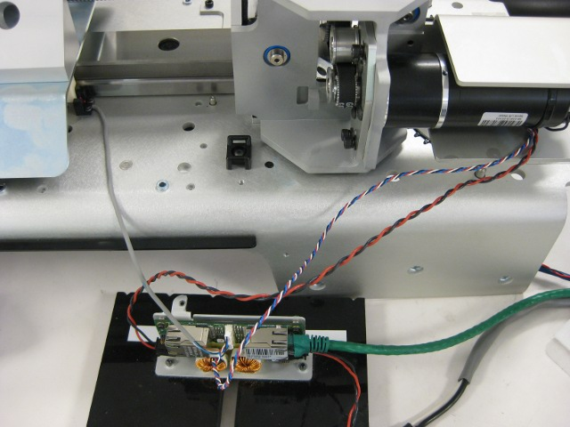

Plug your power and etherCAT into the test station MCB. Plug the calibration and encoder cables into the MCB. Unplug the etherCAT cable from the far side of the MCB.
Make sure that your cables are clear of the robot. Secure your cables so they will be out of harm's way when the torso is moving.
This test will reprogram and reconfigure the torso lift MCB (this is just like the other qualification tests). Make sure that it is the only MCB plugged in to the test cart.
The hysteresis test may go slowly. Watch the runtime monitor during the test. If the EtherCAT Master goes into 'Error' mode, you will have to reset motors. This probably means you have a loose cable, or your connection is weak.
Hold the calbes out of the torso's path at all times.
Press 'Continue' to proceed.